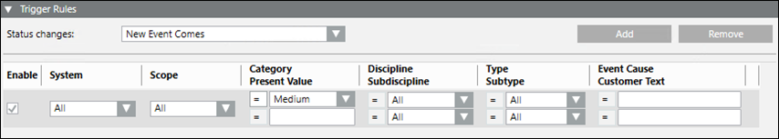

Trigger Rules
You must define one or more incident triggers for incident triggering to take place.

- Status changes: This drop-down list lets you define when the incident is triggered based on the event source status. In order for incident triggering to take place, at least one Status change must be defined. By default, the New Event Comes is selected.
- New Event Comes: When the event occurs (source goes off-normal) and appears in Event List.
- Event Source Back to Normal: When the event condition is resolved (source back to normal).
- Event Acknowledged: When the operator sends the acknowledge command.
- Event Reset: When the operator sends the reset command.
- Event Closed: When the operator closes the event.
- Enable: Indicates if the rule is enabled when the check box is selected
- System: Displays all the online systems which are connected in the Distribution Network environment. Ensure that you check the Distribution Connection type before selecting the system
- Scope: Displays all the available scopes in the current project.
The incident is triggered only if the Event Source (the device that raised the event) is included in the specified scope. Setting the scope to All means that no filtering on scopes can be done To assign a scope, see Configuring a Scope Definition. - Category: Filters the category of the Event and allows you to select an event category from the list. Select All if filtering by Event Category is not required. If an Event Category is set, then you must also define the filtering operator, such as Equal or Not Equal.
- Discipline: Filters the discipline of the Event Source and allows you to select a discipline from the list.
- Type: Filters the object type of the Event Source and allows you to select a discipline from the list.
- Event Cause: Enter the text representing the event cause. Filters the text representing the event cause.
- Present Value: Filters the value of the Event Source at the time of its generation.
- Subdiscipline: Filters the sub discipline of the Event Source and allows you to select a subdiscipline from the list.
- Subtype: Filters the sub object type of the Event Source and allows you to select a subtype from the list.
- Customer Text: Enter the text in addition to the text specified in event cause description.
- Add: Adds an incident Trigger rule.
- Remove: Removes an incident Trigger rule.